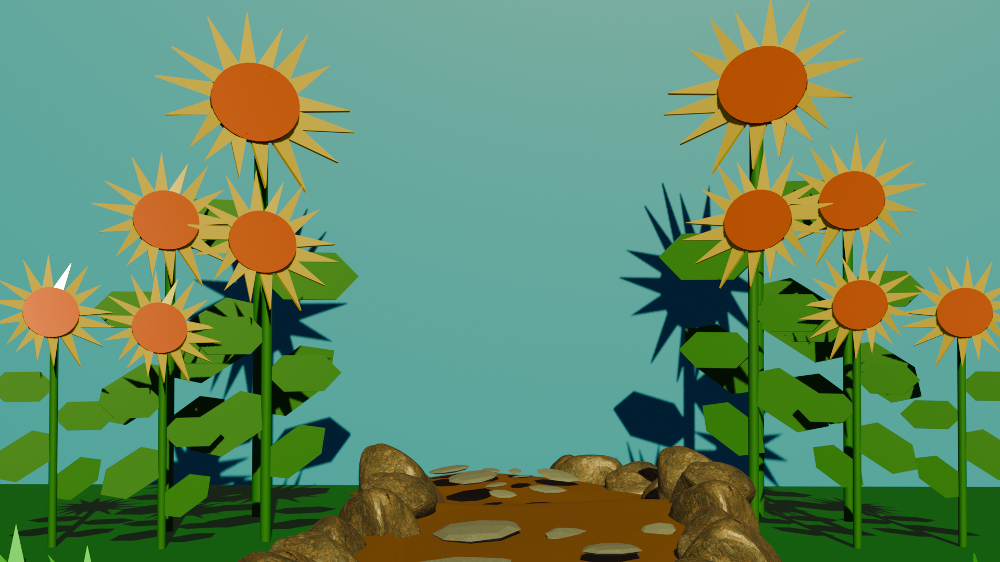

I chose to create a scenery of a garden like environment, because I initially got inspiration to do so from the music video of "What a Wonderful World" by Louis Armstrong. I feel like it was manageable for me to do since struggling with the table exercise from the previous class, I'd say the process was a bit of a rollercoaster, because within the two sessions I was working on this, it was night and day. The very first session was very messy because for some reason blender wouldnt show my meshes at some point which made me make a whole new file, but the second session around it went way smoother, because I had a clearer and defined idea of how to approach this project. It felt super satisfying to apply the texture from poly haven onto the stones along with applying the colors to the entire environment, the yellow lighting is probably my favorite aspect about how I did this project with the stones being a close second. .